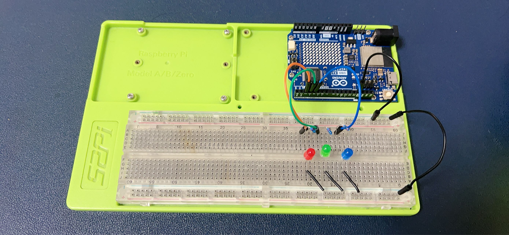
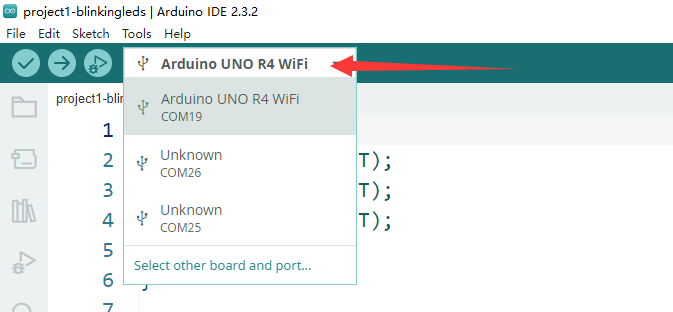
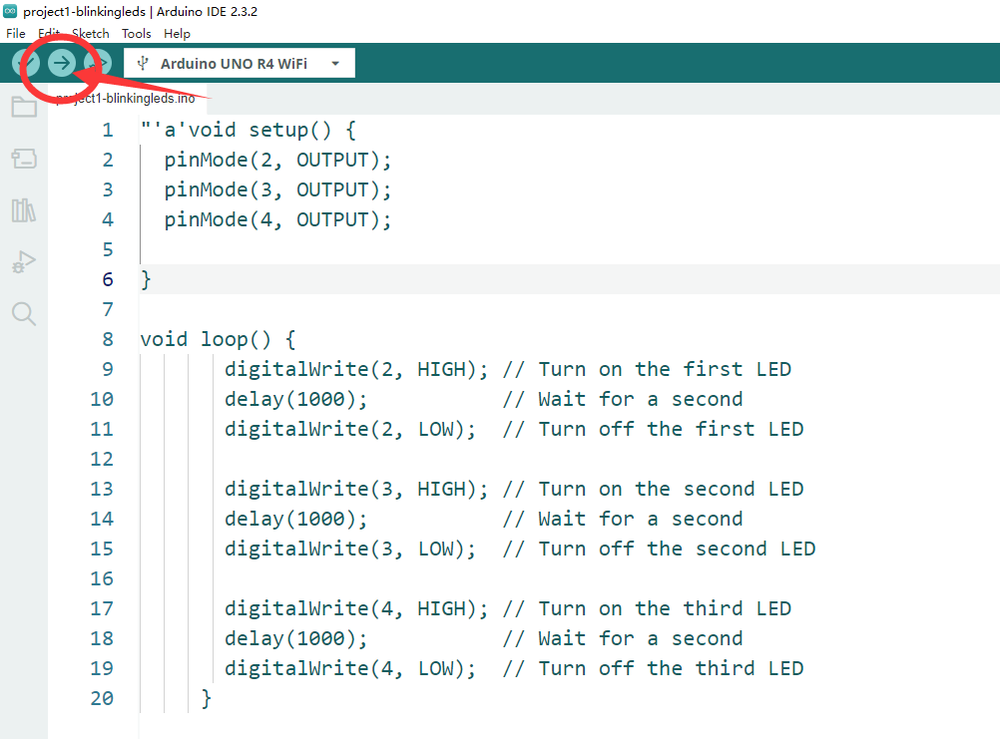
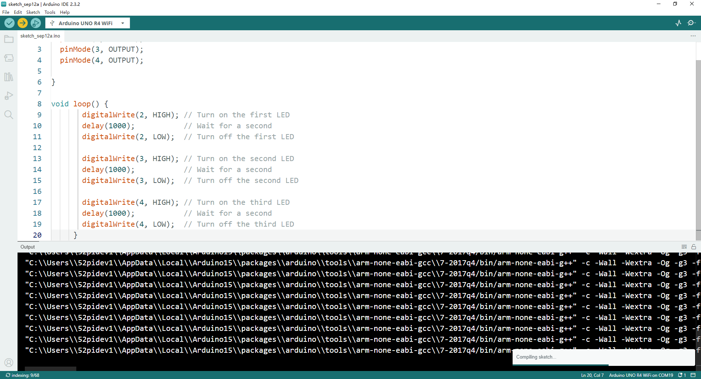

Project 1 Blink LED
Description
In this demo, we are going to light up 3 LEDs by using Arduino UNO R4 WiFi.
Setting Up a Simple LED Circuit with Arduino UNO R4 WiFi

Materials Needed:
- 1 x Arduino UNO R4 WiFi(or other Arduino Board)
- 3 x LED indicator (Red, Green, Blue)
- 3 x 220 ohm resistor
- 10 x Male-to-male Dupong wire
- 1 x USB-C programming cable
- 1 x 52Pi Experiment platform
Steps:
Prepare Your Workspace:
- Ensure your Arduino UNO R4 WiFi is powered off.
- Lay out your LEDs, resistors, and jumper wires for easy access.
Connect the Resistors to the LEDs:
- Take one 220-ohm resistor and connect one end to the anode (longer leg) of an LED.
- Connect the other end of the resistor to one of the digital output pins on the Arduino board.
Connect the LEDs to the Arduino:
- Insert the cathode (shorter leg) of each LED into a separate digital output pin on the Arduino board.
Secure the Connections:
- Use jumper wires to connect the resistors to the digital pins if the resistor leads are too short to reach directly.
- Ensure all connections are secure to prevent loose connections.
Upload the Code:
- Write a simple program in the Arduino IDE to blink the LEDs. Here’s an example code snippet:
- Upload the code to your Arduino UNO R4 WiFi.
void setup() {
// Define the pins where the LEDs are connected
pinMode(2, OUTPUT); // Replace 2 with the pin number you used for the first LED
pinMode(3, OUTPUT); // Replace 3 with the pin number you used for the second LED
pinMode(4, OUTPUT); // Replace 4 with the pin number you used for the third LED
}
void loop() {
digitalWrite(2, HIGH); // Turn on the first LED
delay(1000); // Wait for a second
digitalWrite(2, LOW); // Turn off the first LED
digitalWrite(3, HIGH); // Turn on the second LED
delay(1000); // Wait for a second
digitalWrite(3, LOW); // Turn off the second LED
digitalWrite(4, HIGH); // Turn on the third LED
delay(1000); // Wait for a second
digitalWrite(4, LOW); // Turn off the third LED
}
Upload Sketch
-
Connect the Arduino UNO R4 wifi board to your PC or laptop via USB-C programming cable.
-
Select the serial port to your Arduino UNO R4 wifi board.

- Click
Arrorwicon to upload the sketch to your Arduino UNO R4 wifi board.


Power On and Test:
- Power on your Arduino UNO R4 WiFi.
- Observe the LEDs blinking in sequence as programmed.
Notes:
- Make sure to follow the correct polarity when connecting the LEDs to avoid damaging them.
- Always double-check your connections before powering on the Arduino to prevent short circuits.
- You can modify the
delay()function in the code to change the blinking speed of the LEDs.
Demo Code Download:
- Demo Code sketch File: Download